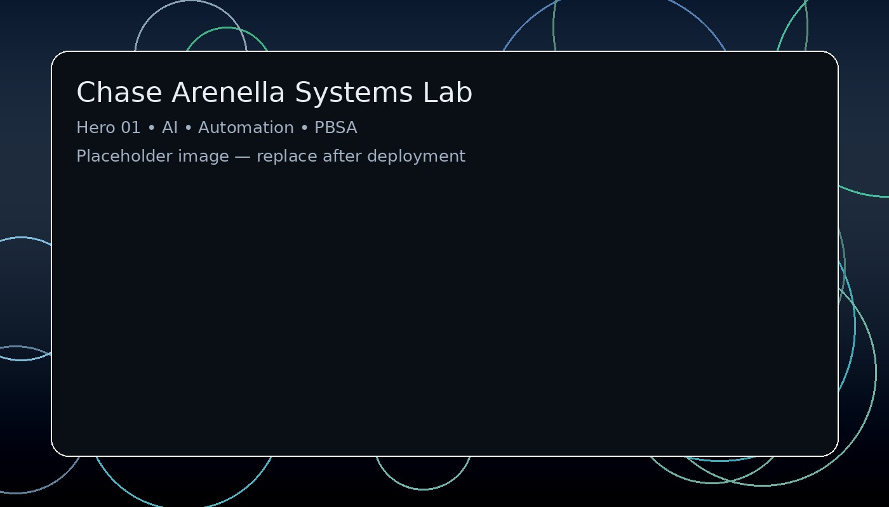

A technical authority pillar by Chase Arenella documenting AI automation experiments, decision frameworks, and the build-out of Personal Brand Search Architecture (PBSA).
PBSA, AI Productivity, leadership systems.
Agents, workflows, and deployment patterns.
Logs and iterations from real builds.
Last refreshed: loading…

Swap this image after deployment to strengthen image entity clustering.
Search engines gain confidence when a single real-world person (entity) is referenced consistently across multiple domains that cross-link with shared context. This site is designed to strengthen the “Chase Arenella” entity graph by publishing technical content and linking back to the canonical hub.
If you’re looking for identity + media assets, go to the core hub. If you’re looking for systems thinking and automation, this site is the authority layer.
Maintenance archive: /maintenance